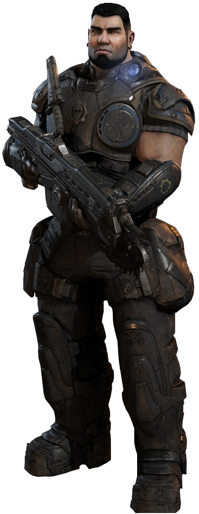
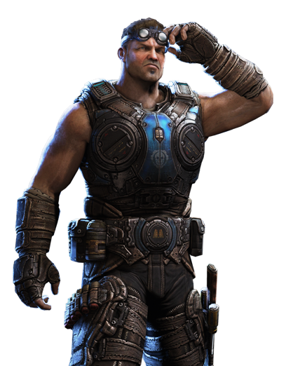
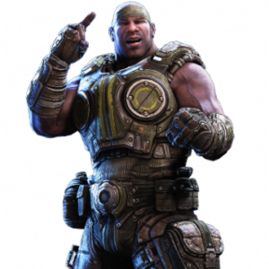

PERSONAJES

|
MARCUS MICHAEL FENIX
Marcus Michael Fenix, sargento del Ejército de la Coalición de Gobiernos Ordenados (CGO), protagonista y personaje principal de la primera saga del universo de Gears of War.
Un muy reconocido militar durante las Guerras del Péndulo, ganó la Estrella Embry, la más grande condecoración de todas, por sus grandes hazañas en la Batalla de los Campos de Aspho.
Al igual que el resto de la humanidad, todo cambió para él después del Día de la Emergencia. Aunque Marcus luchó valientemente contra las tropas Locust durante 10 años, abandonó su puesto para rescatar a su padre, el científico Adam Fenix, pero por desgracia no pudo llegar a tiempo. Fue juzgado por negligencia y abandono en el incumplimiento del deber y condenado a 40 años de prisión en la Cárcel de Máxima Seguridad de Jacinto. Se mantuvo preso 4 años hasta que fue liberado por su compañero y mejor amigo: Dominic Santiago. Marcus reemplazó a Minh Young Kim, el anterior líder del Pelotón Delta, después de su muerte a manos del General RAAM. Junto con el Pelotón Delta, él detonó la Bomba de Masa Ligera y destruyó gran parte de la Hondonada.
Con su respeto nuevamente ganado, Marcus participó en la Operación: Tormenta en la Hondonada, en la que se hundió la ciudad de Jacinto. Después de que la CGO se trasladó a Vectes, Marcus luchó contra los Supervivientes y los Lambent, hasta que la CGO se derrumbó tras el abandono del ex-presidente Richard Prescott. Marcus, y el resto de Delta se unieron con otros Gears a bordo del CNV Sovereign, tratando de sobrevivir junto con muchos otros civiles. Marcus está enamorado de la teniente Anya Stroud (y ella de él), éste se sintió atraído hacia ella desde el primer momento en que la vio en una visita que ella realizó junto a su madre (Helena Stroud) a un campo de entrenamiento de Gears, aunque a inicios de conocerse, Marcus nunca le declaro a Anya lo que sentía por ella, su mejor amigo, Dominic Santiago, se lo dijo a Anya más tarde.
|
DOMINIC SANTIAGO
Dominic "Dom" Santiago, soldado comando de las Fuerzas Armadas de la Coalición de Gobiernos Ordenados (CGO). Es un duro guerrero que posee una actitud positiva incluso en los peores momentos.
Liberó a su mejor amigo, Marcus Fenix, de la Cárcel de Máxima Seguridad de Jacinto y lo reclutó para el pelotón Delta. Luego de perder todo por lo que luchaba, Dom se descuidó mucho, participó durante la Pandemia Lambent y se sacrifico para salvar a Delta en la Misión a Mercy. om comenzó a salir con María, pero accidentalmente la dejó embarazada.
Decidieron decirle a sus padres y casarse, a pesar de que eran muy jóvenes y aún estaban en la escuela. Su padre le dijo que estaba orgulloso de su valor al aceptar la responsabilidad. Dom dijo que era la última estupidez que haría, y que conseguiría un trabajo para sostenerse a él y a María. Varios meses después se casaron, Marcus y Carlos asistieron en su traje de gala, pues recién se habían enlistado en el ejército de la CGO. Tras la boda, Dom y María hablaron sobre sus opciones, y Dom decidió unirse también al ejército, como su hermano. En los primeros días de Helada, nació el primer hijo de Dom, Benedicto, justo antes de que se fuera a las filas de la Armada.

| |
| 
|
DAMON BAIRD
El Soldado Damon Baird, anteriormente Teniente, es gracioso, inteligente, y a veces egoísta, Baird es sin duda autónomo. Sin embargo, él florece cuando se siente esencial para el éxito del grupo.
Líder del Escuadrón Kilo junto a Sofía Hendrick, Garron Paduk y Augustus Cole.
Baird no está muy feliz de ser un soldado, él es bueno en eso. Por desgracia, su mala actitud, mal humor y falta de voluntad general, para asumir cualquier responsabilidad se han interpuesto en el camino de su cargo. Es un Gear experto en mecánica y en campos técnicos, como arreglar maquinaria avanzada de la CGO y descifrar datos.
Él y Augustus Cole se unieron a la Coalición de Gobiernos Ordenados en el Día de la Emergencia, siendo obligados por sus padres a participar. Catorce años más tarde, fue miembro del Pelotón Alpha durante la Ofensiva de Masa Ligera, pero se unió al Escuadrón Delta, junto a Cole, después de que el resto de sus compañeros fueran asesinados. Después de concluir con éxito la Ofensiva, fue asignado para dirigir a Sigma-Uno con Cole, formando parte en varias batallas contra los Locust. Durante la Operación: Tormenta en la Hondonada fue capturado por los Locust para ser torturado, pero por suerte fue hallado y rescatado por el Escuadrón Delta, se volvieron a unir a Delta, y luchó en la campaña para hundir Jacinto. Se unió al resto de la CGO en la evacuación del Puerto Farrall y más tarde en Vectes, donde se vio obligado a ayudar a los supervivientes. Más tarde, participó en la Pandemia Lambent, en la cual Baird daba apoyo táctico, ayudando a formular planes para Delta y Control.
|
AUGUSTUS COLE
Augustus "El Tren" Cole, soldado especialista de las Fuerzas Armadas de la Coalición de Gobiernos Ordenados, fue un exitoso jugador de Thrashball conocido por su extravagante y contundente estilo.
Después del Día de la Emergencia, Cole se unió al Ejército CGO como un Gear donde se le conoce por su encantador carácter. Cole ha pasado la mayor parte de su carrera militar junto a su amigo, Damon Baird, con el que comenzó esta nueva etapa en su vida. A lo largo de su carrera como Gear, ha rechazado múltiples ascensos, argumentando que eso afectaría la cantidad de Locust que podría matar. Como parte de Delta-Uno, Cole se convirtió en uno de los mejores soldados de la CGO, luchando en grandes y decisivas batallas de la Guerra Locust.
Entabló una amistad con Bernadette Mataki, y continuó luchando por la CGO durante el traslado a Vectes, la lucha contra los Supervivientes y la Pandemia Lambent. Cole nació en la ciudad de Hanover. Se dice que el y Baird fueron a la misma escuela. El se transformo en uno de los mas famosos jugadores de Thrashball cuando era adulto. Un hombre de la linea defensiva, Cole como jugador valía millones, los cuales mantenía en un banco de la ciudad de Ephyra. Cole jugo para muchos equipos en su carrera, pero su temporada mas famosa como jugador fue con el equipo de los Cougars, los cuales eran de su ciudad natal, y los Eagles. Durante la mayor parte de su carrera en el thrashball, parece que llevaba el numero 83.

| |